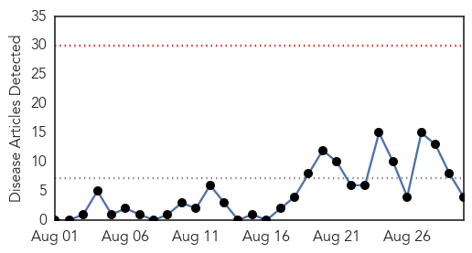
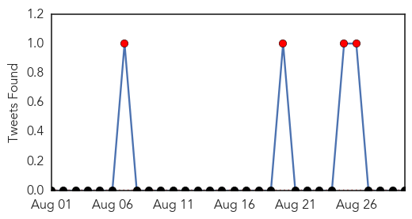
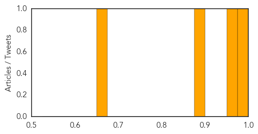

MERS
30-Day Web Trend
0 alerts, 0 warnings

30-Day Twitter Trend
6 alerts, 6 warnings

Article Locations

Article Confidences
Top Articles:
Top Tweets:
- 0.744
- AFD Blog `Saudi MOH: 3 New MERS Cases, 4 Deaths' MERS-CoV http://t.co/aWHkWK08ND
West Nile Virus
30-Day Web Trend
1 alerts, 0 warnings

30-Day Twitter Trend
1 alerts, 0 warnings

Article Locations

Article Confidences

Top Articles:
- 0.989
- California and Arizona top nation in West Nile virus cases
- 0.985
- Sparks resident positive for West Nile, no symptoms
- 0.984
- Virus-carrying mosquitoes found in Goshen
- 0.943
- State health officials report 2nd West Nile death of 2015
- 0.924
- Health officials: Oklahoma's second West Nile death confirmed
- 0.793
- Mosquito Borne Illness Alert Continues After West Nile Cases Confirmed
- 0.744
- Washoe County identifies person infected with West Nile
- 0.681
- Wyoming State Veterinary Laboratory director issues warning about disease
- 0.520
- Washoe County identifies person infected with West Nile
Top Tweets:
-
No tweets found for Aug 30, 2015